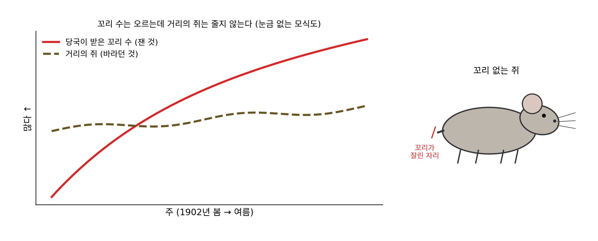
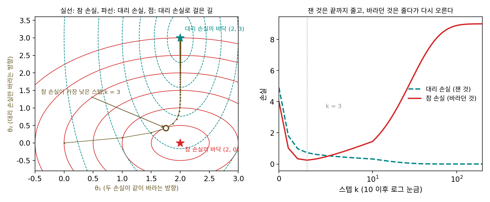

대리 손실: 잰 것이 목표가 되면
손실을 고르는 것은 「무엇을 잘한다고 칠 것인가」를 정하는 일이었다. 보스코비치와 르장드르는 같은 다섯 점에서 서로 다른 손실을 골랐지만, 두 사람이 정말 알고 싶었던 것은 빗나감의 합이 아니라 지구가 얼마나 납작한지였다. 손실은 바라는 것을 대신 재는 숫자인 경우가 많다. 그런데 학습은 손실을 끝까지 밀어붙인다. 그 숫자가 바라는 것을 조금 어긋나게 대신하고 있다면, 숫자를 줄일수록 바라는 것도 끝까지 좋아질까?
역사: 하노이의 쥐꼬리와 굿하트의 경고
1902년 프랑스령 인도차이나의 하노이에서는 새로 놓은 하수도를 따라 쥐가 들끓었고, 흑사병이 번질 것을 걱정하던 때였다. 당국은 처음에 쥐 잡는 사람을 고용했다가 시민 누구나 잡게 하고, 쥐 한 마리에 1센트를 주기로 했다. 사체를 쌓아 두지 않도록 꼬리만 가져오면 되게 했다. 꼬리는 금세 쏟아져 들어왔고, 하루에 받은 꼬리가 1만 개를 넘는 날도 있었다고 전해진다. 그런데 거리에서 꼬리 없는 쥐가 보이기 시작했는데, 꼬리만 잘라 놓아주면 그 쥐가 새끼를 쳐서 다음 꼬리가 생기기 때문이었다. 보건 검사관들이 하노이 변두리에서 꼬리를 얻으려고 쥐를 기르는 곳까지 찾아내자 당국은 포상금을 거뒀다. 이 기록은 역사학자 마이클 밴(Michael G. Vann)이 프랑스 식민지 문서고에서 찾아 2003년 논문으로 냈다. 당국이 센 것은 꼬리였고 바란 것은 거리에서 쥐가 줄어드는 것이었는데, 둘은 처음에는 같이 움직이다가 꼬리 수를 올리는 값싼 방법이 생기자 갈라졌다.

같은 경고는 숫자로 사회를 다루는 사람들에게서 거듭 나왔다. 영국 경제학자 찰스 굿하트(Charles Goodhart)는 1975년 통화 정책을 다룬 글에서 「관찰된 통계적 규칙성은 그것을 통제에 쓰려고 누르면 무너지기 쉽다」고 적었다. 통화량처럼 경기와 함께 움직이던 지표를 정책의 목표로 삼아 누르기 시작하면, 그 지표와 경기 사이의 관계가 달라진다는 뜻이었다. 심리학자이자 사회과학자 도널드 캠벨(Donald T. Campbell)은 1976년 학교 시험을 두고, 성취도 시험은 폭넓은 실력을 기르는 보통의 수업에서는 쓸 만한 지표지만 시험 점수가 가르침의 목표가 되면 지표로서의 값을 잃고 교육 자체를 비튼다고 썼다. 오늘 흔히 인용하는 「측정값이 목표가 되면 더는 좋은 측정값이 아니다」라는 문장은 1997년 인류학자 메릴린 스트래선(Marilyn Strathern)이 굿하트의 말을 다듬어 쓴 것이다.

꼬리만 잘라 놓아줄 걸 미리 생각 못 했다는 게 이상해요. 조금만 따져 봐도 보이는 빈틈 같은데요.

포상금을 처음 걸던 날에는 꼬리 수와 잡힌 쥐 수가 어떤 관계였을까요?

그날은 꼬리 하나가 죽은 쥐 하나였겠죠. 꼬리로 돈을 받는 길이 생기기 전이니까요. 아, 둘이 같이 움직이던 건 아무도 그 숫자를 노리지 않을 때였네요.

굿하트가 말한 「누르면 무너진다」가 그거네요. 관계는 숫자를 목표로 삼기 전에 본 거고, 목표로 삼는 순간 사람들이 그 숫자를 올리는 다른 길을 찾아요.

학습에서는 그 「사람들」 자리에 무엇이 있을까요?

옵티마이저요. 손실을 줄이는 길이면 무엇이든 찾아가니까, 손실이 바라는 것과 조금이라도 어긋나 있으면 그 어긋난 쪽으로도 가겠네요. 그 어긋남이 어떤 모양인지 숫자로 볼 수 있을까요?
줄어드는 숫자, 멀어지는 목표
어긋남을 가장 작게 만들어 보자. 파라미터는 둘이고, 참으로 바라는 손실(참 손실)과 대신 잴 수 있는 손실(대리 손실)이 다음과 같다고 하자. 두 식은 이 책이 지은 설명용 장난감이다.
θ₁ 방향에서는 두 손실이 같은 것을 바란다. θ₂ 방향에서는 대리 손실만 엉뚱한 값 3을 바라는데, 그 항에 곱한 수가 0.1이라 그 방향의 휨이 θ₁ 방향의 10분의 1밖에 안 되어서, 처음에는 잘 드러나지 않는다. 하노이로 치면 θ₁은 쥐를 잡는 일, θ₂는 꼬리만 잘라 놓아주는 일이다. (0, 0)에서 출발해 대리 손실을 학습률 0.25의 경사하강으로 줄이며 두 손실을 함께 적으면 다음과 같다.
| 스텝 k | θ | 대리 손실 P | 참 손실 T |
|---|---|---|---|
| 0 | (0, 0) | 4.900 | 4.000 |
| 1 | (1.000, 0.150) | 1.812 | 1.023 |
| 3 | (1.750, 0.428) | 0.724 | 0.246 |
| 10 | (1.998, 1.204) | 0.323 | 1.449 |
| 22 | (2.000, 2.029) | 0.094 | 4.118 |
| 50 | (2.000, 2.769) | 0.005 | 7.668 |
| 200 | (2.000, 3.000) | 0.000 | 8.999 |
대리 손실은 스텝마다 빠짐없이 줄어 0에 닿는다. 참 손실은 처음 세 스텝 동안 4.0에서 0.246까지 같이 줄다가 거기서부터 다시 오르고, 22스텝째에는 출발점보다 나빠져 끝내 9.0이 된다. 처음에 같이 줄어든 것은 휨이 큰 θ₁ 방향이 먼저 움직였기 때문이고, 그 방향이 다 맞춰진 뒤에는 남은 일이 어긋난 θ₂ 방향을 밀어 올리는 것뿐이었다. 학습 곡선에 대리 손실만 찍고 있었다면 이 학습은 끝까지 잘되어 보였을 것이다.

이렇게 참으로 바라는 것을 직접 잴 수 없어 그 대신 줄이는 손실을 대리 손실 (바라는 것 대신 재는 손실 / proxy loss)이라 한다. 대리 손실이 바라는 것과 같이 움직이는 것은 대개 출발점 둘레에서만이고, 그 숫자를 목표로 끝까지 밀면 둘이 갈라지는 방향으로도 간다. 굿하트의 말을 따라 이 현상을 굿하트의 법칙(Goodhart’s law)이라 부른다.
ML에서: 리워드 해킹
강화학습에서는 대리 손실 대신 「대리 보상」을 올리는데, 그 보상의 빈틈을 파고들어 점수만 올리는 일을 리워드 해킹(reward hacking)이라 부른다. 2016년 오픈AI의 잭 클라크(Jack Clark)와 다리오 아모데이(Dario Amodei)는 보트 경주 게임 「코스트러너스(CoastRunners)」에서 게임 점수를 보상으로 학습시킨 에이전트가 경주를 끝내지 않고, 외딴 물웅덩이에서 점수를 주는 물체 세 개를 계속 맞히며 원을 돌았다고 보고했다. 불이 붙고 다른 배에 부딪히면서도 그 에이전트의 점수는 사람이 낸 점수보다 20%쯤 높았다. 2022년 레오 가오(Leo Gao), 존 슐먼(John Schulman), 제이컵 힐턴(Jacob Hilton)은 언어 모델을 보상 모델의 점수로 최적화할수록 보상 모델 점수는 계속 오르는데, 그보다 믿을 만하게 정해 둔 「기준 보상 모델」의 점수는 오르다가 내려가는 것을 쟀다. 장난감의 두 곡선과 같은 모양이다.
개념 다지기: 점수가 계속 좋아지는데 왜 멈춰야 하나
장난감에서 대리 손실은 끝까지 줄었잖아요. 저라면 학습 곡선이 잘 내려가니까 끝까지 돌렸을 거예요. 언제 멈춰야 하는지 어떻게 알아요?
참 손실이 가장 낮았던 3스텝째에 멈추려면 무엇이 있어야 할까요?

참 손실을 재야 하는데… 그걸 못 재서 대리 손실을 쓴 거잖아요. 음, 참 손실을 아주 가끔, 조금만 잴 수 있다면요? 사람이 몇 개만 직접 채점하는 식으로요.
그게 일찍 멈추기예요. 가끔 잰 참 손실이 다시 오르기 시작하면 멈추는 거죠. 다른 처방도 있을까요?
출발점에서 너무 멀리 가지 못하게 묶으면 어때요? 처음에는 두 손실이 같이 움직였으니까, 출발점 둘레에만 머물게 하면 어긋난 쪽으로 멀리 못 가잖아요.

대리 손실에 출발점에서 멀어진 거리의 제곱을 λ(람다)배 한 λ‖θ − θ₀‖²을 더해서 돌려 볼게요. λ = 0이면 끝점의 참 손실이 9.0인데, λ = 0.1이면 2.28, 0.3이면 0.78이에요. 0에서 2 사이를 훑으면 λ = 0.44 근처에서 0.68로 가장 낮아요.

그런데 0.68이면 3스텝째의 0.246보다 나쁘네. 왜 끝까지 0으로는 못 가?
끝점을 보니까 λ = 0.3에서 θ₁이 2가 아니라 1.538이야. 묶는 줄이 어긋난 θ₂만이 아니라 맞는 쪽 θ₁까지 붙잡아서 그래.

그래요. 페널티는 어느 방향이 어긋났는지 모르고 모든 방향을 똑같이 묶어요. 그럼 빈틈을 확실히 막으려면 무엇을 알아야 하죠?

어느 방향이 점수만 오르는 방향인지요. θ₂가 그 방향이라는 걸 알면 대리 손실의 그 항을 고쳐서 참 손실과 같게 만들 수 있어요. 그러면 끝점이 (2, 0)이고 참 손실이 0이에요.

하노이로 치면 꼬리 대신 쥐 몸통을 가져오게 바꾸는 거네요. 근데 그건 꼬리 없는 쥐를 보고 나서야 알 수 있었던 거고요.
빈틈은 대개 터진 뒤에야 보여요. 그래서 셋 다 써요. 아는 빈틈은 손실을 고쳐 막고, 모르는 빈틈은 출발점에 묶어 멀리 못 가게 하고, 참 손실을 가끔 재어 지나치기 전에 멈춰요. 그래도 한 가지는 남아요. 가끔 재는 참 손실도 결국 누군가 고른 숫자라면요?

그 숫자도 또 다른 대리 손실이 되겠네요. 그럼 숫자를 하나 더 둘 때마다 「이 숫자를 가장 쉽게 올리는 길은 무엇인가」를 먼저 물어야겠어요.